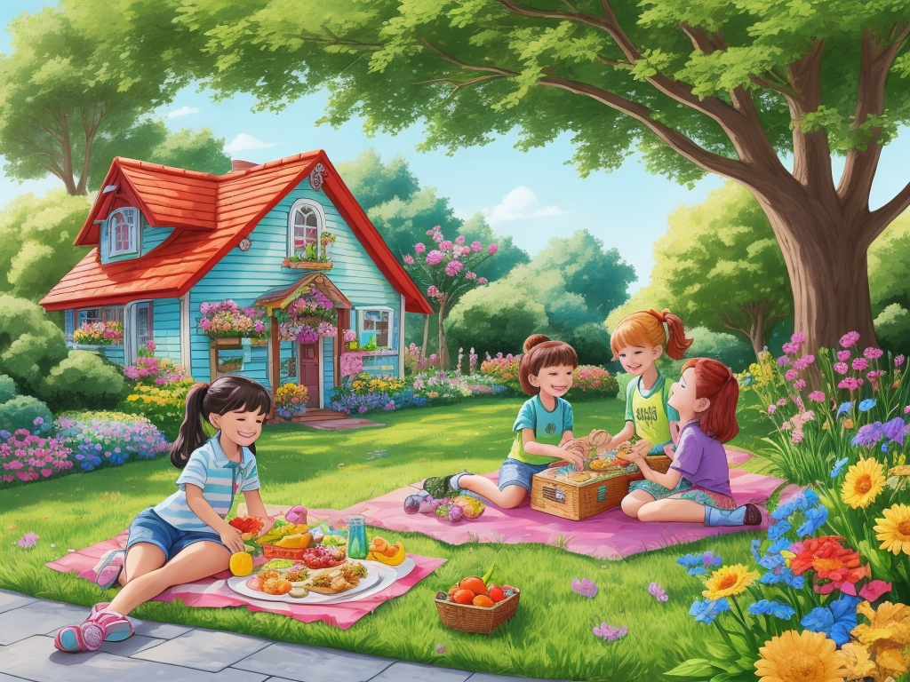

Dans le village coloré de Veggieland vivait un jeune oignon nommé Oliver. Il était dodu et rond, avec des couches de peau comme du papier qui dégageaient un fort arôme chaque fois qu'il était à proximité. Malgré sa valeur nutritionnelle, les enfants du village avaient tendance à l’éviter, préférant les fruits et légumes plus sucrés.

Par un après-midi ensoleillé, alors que les enfants jouaient sur la place du village, leurs voix résonnaient dans les airs, accompagnées de leurs rires et de leurs bavardages. Parmi eux se trouvait Timmy, un jeune garçon au palais curieux.
"J'en ai marre de manger les mêmes vieilles collations tous les jours", se plaignit Timmy, fronçant le nez à l'idée des oignons.
"Ouais, moi aussi. Les oignons sentent drôle et ont un goût bizarre", approuva son amie Sarah.

À l'insu des enfants, la mère de Timmy, Mme Thompson, a entendu leur conversation alors qu'elle s'occupait de son jardin à proximité. Craignant que son fils et ses amis ne profitent pas des bienfaits nutritionnels des oignons, elle a décidé d'intervenir.
Avec un panier rempli d'oignons fraîchement récoltés à la main, Mme Thompson s'est approchée des enfants avec un sourire chaleureux.
"Bonjour les enfants ! Je n'ai pas pu m'empêcher d'entendre votre conversation sur les oignons", dit-elle joyeusement.
Les enfants se tournèrent vers elle, leurs visages s'éclairant à la vue du panier.
"Nous n'aimons pas les oignons, Mme Thompson. Ils sentent drôle", a expliqué Timmy.
Mme Thompson hocha la tête avec compréhension. "Je sais que les oignons peuvent avoir une forte odeur, mais saviez-vous qu'ils sont comme de petits protecteurs pour notre corps ?"
Curieux, les enfants se penchèrent tandis que Mme Thompson commençait à leur expliquer.
"Imaginez que votre corps est un château et que les oignons sont les chevaliers qui le gardent", a-t-elle déclaré. "Les oignons ont des pouvoirs spéciaux qui aident à éloigner les méchants, comme combattre les germes sournois qui tentent d'envahir notre corps."
Les yeux des enfants se sont agrandis d'intérêt en écoutant l'explication de Mme Thompson.
"Mais ce n'est pas tout", a poursuivi Mme Thompson. "Les oignons sont aussi comme des potions magiques qui rendent notre cœur fort et notre esprit vif."
Pendant qu'elle parlait, Mme Thompson brandissait un oignon, désignant ses couches. "Tout comme un super-héros porte des couches d'armure, les oignons ont des couches de bonté qui protègent notre corps du mal."
Sur ce, Mme Thompson a invité les enfants à la rejoindre dans la cuisine pour préparer de délicieuses collations à l'oignon. Ensemble, ils ont coupé les oignons en rondelles, les ont trempés dans une pâte croustillante et les ont frits à la perfection, créant des rondelles d'oignon croquantes qui leur ont mis l'eau à la bouche.
Ensuite, ils ont caramélisé quelques oignons dans une poêle jusqu'à ce qu'ils deviennent dorés et sucrés comme un bonbon. Mme Thompson les a superposés entre des tranches de pain avec du fromage pour faire d'irrésistibles sandwichs aux oignons caramélisés.
Alors que les enfants dégustaient avec impatience les collations à l’oignon, leurs papilles gustatives frémissaient de plaisir. Ils ne pouvaient pas croire à quel point les oignons pouvaient être délicieux lorsqu'ils étaient préparés avec soin et créativité.
"C'est incroyable, Mme Thompson!" S'exclama Timmy en se léchant les doigts.
"Je n'aurais jamais cru que les oignons pouvaient avoir un si bon goût !" Intervint Sarah, cherchant une autre rondelle d'oignon.
Mme Thompson sourit avec satisfaction, sachant qu'elle avait réussi à faire découvrir aux enfants le monde merveilleux des oignons.
À partir de ce jour, les enfants de Veggieland ont adopté les oignons comme complément délicieux et nutritif à leurs repas, grâce à la magie culinaire de Mme Thompson et ses collations à l'oignon. Et Oliver l'oignon n'aurait pas pu être plus heureux de savoir qu'il était enfin apprécié pour le légume nutritif et délicieux qu'il était.

Vous avez terminé l'histoire!
C'est l'heure du Quiz !